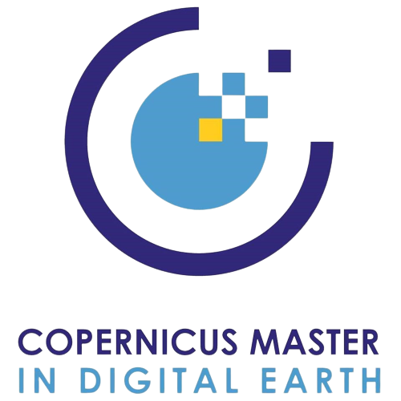
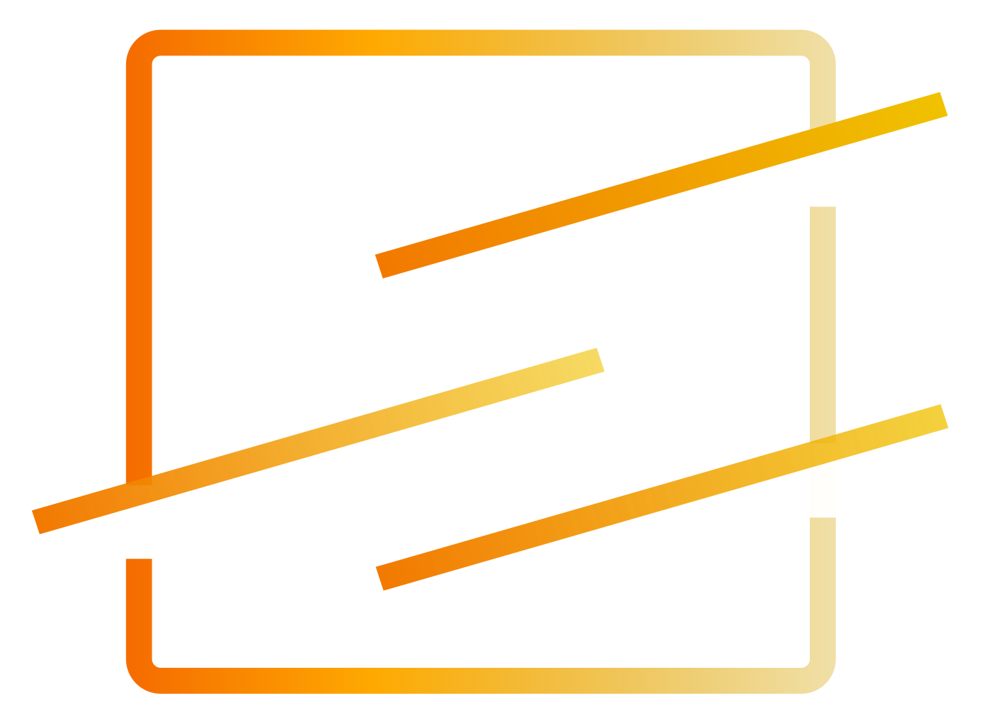
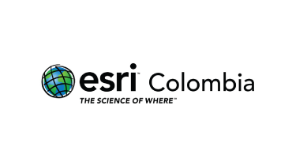

Analyze
Raster, vector and tabular data for patterns, change and location-based insight.
Spatial analysis · Geodatabases · Remote sensing · Data QAGeospatial Specialist · GIS & Earth Observation
I use GIS, satellite imagery and spatial analysis to solve practical problems across environmental monitoring, natural resources, energy and infrastructure.

Profile
I'm Felipe, a Colombian geoscientist and GIS specialist with 5+ years of international experience using raster, vector and business data to answer practical questions and support decisions.
I work across environmental monitoring, natural resources, energy, infrastructure, utilities, risk and other data-driven sectors. My practice spans geodatabase design, spatial analysis, data QA, automation, remote sensing and interactive applications—communicated through cartography, dashboards, documentation and stakeholder presentations.
Raster, vector and tabular data for patterns, change and location-based insight.
Spatial analysis · Geodatabases · Remote sensing · Data QAReliable GIS workflows, data models and interactive applications.
ArcGIS · QGIS · Python · SQL · JavaScriptMaps, dashboards and interfaces that turn analysis into decisions.
Cartography · ArcGIS Dashboards · OpenLayers · CesiumJSSelected work · 2022–2024
A curated selection across GIS analysis, cartography, dashboards, Earth observation and 3D geovisualization.

A Google Earth Engine application that turns multi-sensor imagery into glacier-area and temperature time series for the Northern and Southern Patagonian Ice Fields.

A CesiumJS experience for exploring more than 80 glaciers in 3D, connecting terrain, satellite observations and seasonal change.

A national-scale web application that brings together biodiversity, protected areas and tourism opportunities across Colombia.

Research and applications for visualizing Patagonian glacier change with Earth observation data, submitted across Salzburg and Olomouc.

A curated compilation of maps, posters and web stories developed during the 2023 winter semester, spanning thematic cartography and visual storytelling.

An ArcGIS Dashboard for exploring where and when reported crimes occurred in Chicago, alongside crime type and arrest status.
More maps, visualizations and applied work developed throughout the Erasmus Mundus Copernicus Master in Digital Earth.
Selected experience
Wildlife Conservation Society · Bogotá
Leading the technical update of the Forest Landscape Integrity Index, producing annual global layers for 2018–2024 and building reproducible Earth Engine workflows, applications and ArcGIS dashboards for WCS’s HIFOR initiative.

PLUS Salzburg + Palacký University Olomouc
Completed an Erasmus Mundus double degree with honors, combining Earth observation, spatial data processing and remote sensing with cartography, geo-communication, web mapping and 3D visualization.

Spatial Services · Salzburg
Applied high- and very-high-resolution imagery with Mask R-CNN and Segment Anything to extract dwellings in refugee camps for MSF, while developing Earth Engine mapping algorithms and ArcPy geoprocessing tools.

Termatics · Salzburg
Processed ECOSTRESS and Landsat thermal data for urban temperature and solar-potential analyses, then developed an OpenLayers application that made the results accessible to scientific and general audiences.
Audubon Companies · Bogotá
Led GIS workflows, Python scripts and cartographic methods for utility mapping and disaster-risk analysis, including pipeline ruptures, methane leaks, fluid dispersion and prevention-focused map production.

Esri Colombia · Bogotá
Supported more than 900 English-speaking customers worldwide across ArcGIS Desktop, Pro, Online, Field Maps and Survey123, translating technical needs into practical spatial, cartographic and web solutions.
Let's map it out.
Open to geospatial roles and collaborations across environmental monitoring, natural resources, energy and infrastructure.